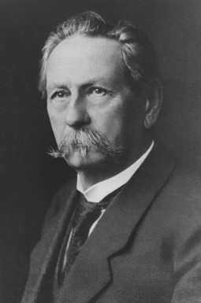

BMW의 설립자인 프란츠 요세프 포프는 1886년 오스트리아의 빈(Vienna)에서 태어났고, 1901년 가족과 함께 체코로 이사가 그곳에서 그래머 스쿨(Grammar School)을 졸업했다. 1909년 기계공학과 전기공학의 공동 학위를 취득한 후, 그는 빈으로 돌아와 AEG(Allgemeine Elektricitäts-Gesellschaft, 전자제품 제조업체)에서 기술자로 근무했다. 이때 프란츠 요세프 포프는 감독관으로 하청업체인 라프 모토렌 베르케(엔진 제조업체)에 장기 파견되었고, 이곳의 열악한 생산 시스템을 혁신하기 위해 AEG사내 동기인 막스 프리츠를 영입했다. 제1차 세계대전이 한창이던 1916년 라프 모토렌 베르케가 경영난을 겪게 되자 프란츠 요세프 포프와 막스 프리츠는 경영권을 인수해 이듬해 ‘바이에리셰 모토렌 베르케(BMW)’로 이름을 바꾸었고, 1918년 주식회사로 상장시켰다. 이후 프란츠 요세프 포프의 경영 하에 BMW는 항공기 엔진을 생산해 독일 군대에 납품했다. 제1차 세계대전이 독일이 속한 동맹국의 패배로 끝나고, 베르사이유 조약(Treaty of Versailles, 전쟁 피해처리에 대한 국제 조약)에 따라 독일은 항공기 엔진을 포함한 일체의 무기류를 생산하지 못하게 되었다. 이에 BMW는 항공기 엔진에서 모터사이클로 눈을 돌려 1923년 첫 번째 모델을 출시했다. 당시 어려운 경제상황으로 독일 내에서 자동차보다는 모터사이클의 수요가 높았고, 항공기 엔진 기술을 토대로 만든 BMW의 제품들은 큰 인기를 끌게 됐다. 이후 BMW는 모터사이클 시장에서의 성공을 바탕으로 1928년부터 본격적으로 자동차 시장에 진출했다. 이것이 ‘BMW’ 브랜드의 시작이었다.

BMW의 설립자 프란츠 요세프 포프(1886~1954년)